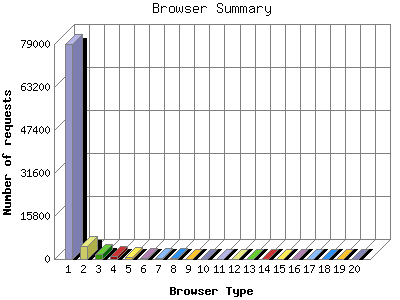

The Browser Summary identifies the most popular web browsers used to visit
this site.
Browsers are broken down by recognized categories such as
Netscape Navigator/Communicator, Microsoft Internet Explorer, WebTV, Opera
and the like. Within each category is also a subgroup by version number
such as 'MSIE 5.0' or 'Netscape 4.5'.
This report shows the first 20 results by number of requests. This report is sorted by number of requests.

| Browser Type | Number of requests | |
|---|---|---|
| 1. | MSIE | 78,938 |
| 2. | Mozilla | 4,630 |
| 3. | Netscape (compatible) | 1,679 |
| 4. | Opera | 964 |
| 5. | Netscape | 860 |
| 6. | Yahoo-MMCrawler | 291 |
| 7. | WebTV | 235 |
| 8. | ia_archiver | 229 |
| 9. | Konqueror | 147 |
| 10. | Googlebot | 143 |
| 11. | LinkWalker | 126 |
| 12. | FAST-WebCrawler | 125 |
| 13. | IBrowse | 94 |
| 14. | Scooter | 83 |
| 15. | NSPlayer | 61 |
| 16. | RMA | 59 |
| 17. | TurnitinBot | 26 |
| 18. | DA | 26 |
| 19. | WinampMPEG | 25 |
| 20. | webcollage | 25 |
| [not listed: 18] | 107 | |
This report was generated on April 3, 2004 00:36.
Report time frame December 11, 2003 00:13 to April 2, 2004 23:56.
| Web statistics report produced by: | |
| analog 5.1 | Report Magic for Analog 2.10 |